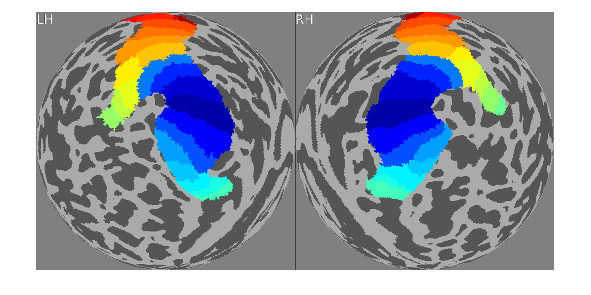
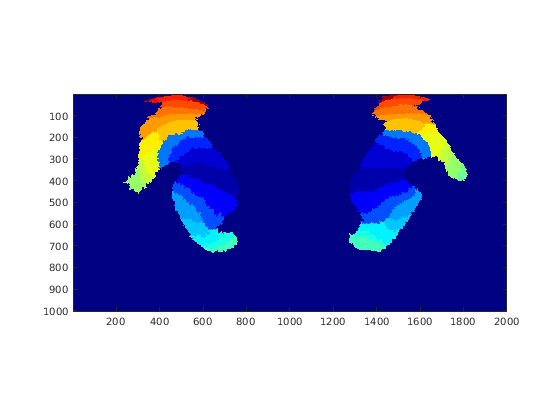
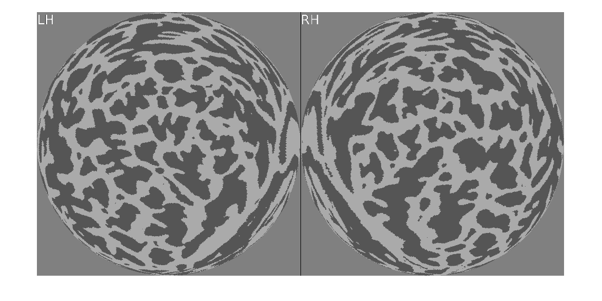
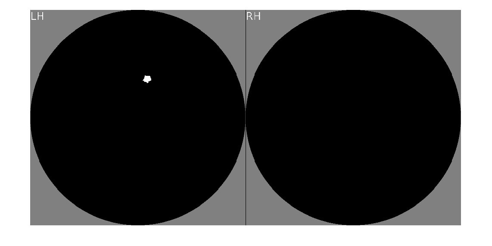
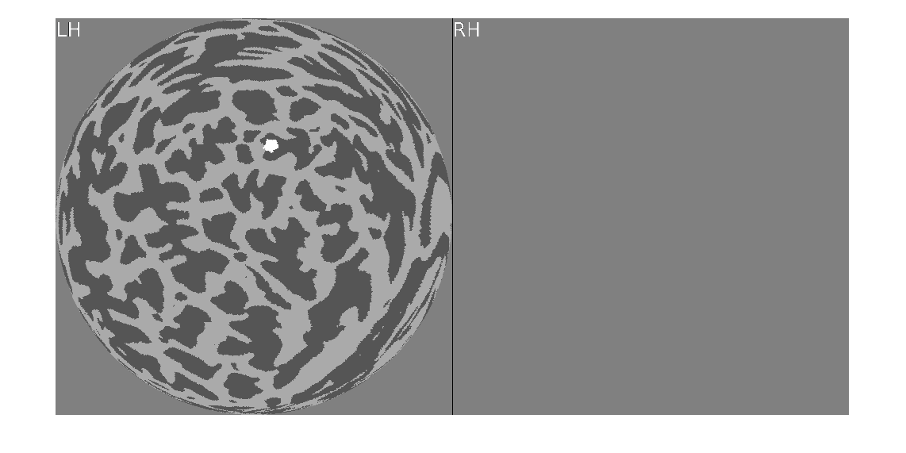
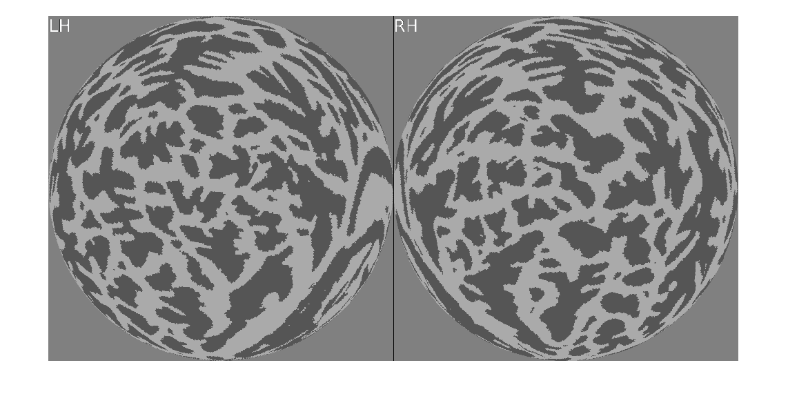
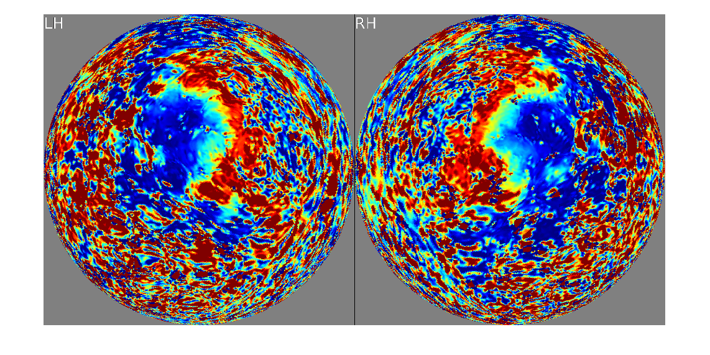

Example 4: Automated surface visualization
Contents
Introduction
% cvnlookup.m is a function in the cvncode repository that enables % automated surface visualization (no manual intervention). This is % useful for large-scale analyses where manual intervention would % be prohibitively slow. Below, we provide some simple examples % of how to use the function. These examples include how to use % the function to draw an ROI on a surface. % % There are many different tools that can visualize surfaces, and % we encourage the user to decide what is best for their needs. % The major disadvantage of cvnlookup.m is that it has no GUI and % is not designed for interactive use (e.g. rotating/panning/zooming). % % Skills/concepts: % - How to use cvnlookup.m % - How to draw ROIs on surfaces % - Issues when mapping volume to surface
Example use of cvnlookup.m
% Note that a pre-requisite for using cvnlookup.m is to have your % FreeSurfer SUBJECTS_DIR environment variable set correctly. getenv('SUBJECTS_DIR')
ans =
'/home/surly-raid4/kendrick-data/nsd/nsddata/freesurfer'
% Let's visualize the Kastner2015 atlas on subj01 data = '~/nsd/nsddata/freesurfer/subj01/label/lh.Kastner2015.mgz'; cvnlookup('subj01',1,data,[0 25],jet(256),0.5);
Warning: Image is too big to fit on screen; displaying at 50%
% Note that we automatically get some variables (rawimg,Lookup,rgbimg,himg) % assigned to the workspace (see 'help cvnlookup'). % We can directly call imagesc on rawimg. This might be useful % for quickly playing around with colormaps and color ranges. figure; imagesc(rawimg,[0 25]); colormap(jet(256)); axis image;
Draw an ROI
% Let's call cvnlookup again and explicitly get the outputs. % In this call, we will threshold away all of the values, % leaving just the curvature showing. [rawimg,Lookup,rgbimg,himg] = cvnlookup('subj01',1,data,[0 25],jet(256),25.5);
Warning: Image is too big to fit on screen; displaying at 50%
% Manually draw an ROI on the left hemisphere near the tip of the calcarine sulcus. % Note: drawroipoly.m is valid only on spherical surfaces. if 0 Rmask = drawroipoly(himg,Lookup); end % To allow automated execution, we embed the above code in an if-statement % and provide the following hard-coded values: Rmask = zeros(453622,1); Rmask([3635 3653 3654 3666 4269 4285 4286 4305 4306 4318 4319 4338 4339 4358 4375 4393 4408 4994 4995 5009 5010 5027 5028 5044 5045 5066 5076 5092 5107 5120 5708 5709 5710 5719 5720 5721 5733 5734 5735 5749 5750 5770 5791 5805 5806 5825 5826 5841 5842 5856 5857 5869 5870 6493 6503 6504 6515 6516 6534 6535 6557 6558 6571 6572 6594 6595 6616 6632 6647 7353 7354 7355 7366 7367 7387 7388 7410 7423 7441 7455 7469 7481 8173 8174 8188 8213 8214 8231 8232 8249 8269 8285 8286 8295 8296 8306 8307 8317 8318 8998 9019 9046 9062 9063 9084 9108 9128 9141 9151 9159]) = 1; % Rmask is a (numlh+numrh)x1 binary mask size(Rmask)
ans =
453622 1
% Let's visualize the ROI in order to check it extraopts = {'roicolor','k','roimask',Rmask}; cvnlookup('subj01',1,data,[0 25],jet(256),0.5,[],[],extraopts);
Warning: Image is too big to fit on screen; displaying at 50%
% We can also directly visualize the ROI as if it were data cvnlookup('subj01',1,Rmask,[0 1],gray);
Warning: Image is too big to fit on screen; displaying at 50%
Save the ROI
% This is a little tricky because the ROI data reflects both hemispheres concatenated, % whereas we typically want to save .mgz files that reflect one hemisphere at a time. % First, create a valstruct and put the ROI inside it valstruct = valstruct_create('subj01'); valstruct = setfield(valstruct,'data',Rmask); valstruct
valstruct =
struct with fields:
data: [453622x1 double]
numlh: 227021
numrh: 226601
% Now, we can save an .mgz file fsdir = '~/nsd/nsddata/freesurfer/subj01'; nsd_savemgz(valstruct_getdata(valstruct,'lh'),'lh.testA.mgz',fsdir); % Note that lh.testA.mgz can be fed back as data into cvnlookup (even though it is just % one hemisphere, the code automatically fills in NaNs for the other hemisphere). cvnlookup('subj01',1,'lh.testA.mgz',[0 1],gray,0.5);
Warning: <data> appears to have only the LH data. proceeding using NaNs for the RH data. Warning: Image is too big to fit on screen; displaying at 50%
Example of automated surface visualization
% We will load in each subject's curvature values, map them (via nearest-neighbor) % to fsaverage, and then generate a visualization of the results. % define subjs = {'subj01' 'subj02' 'subj03' 'subj04' 'subj05' 'subj06' 'subj07' 'subj08' 'fsaverage'}; hemis = {'lh' 'rh'}; % do it for p=1:length(subjs) subjectid = subjs{p}; % for individual subjects, we have to map the curvature values to fsaverage if p <= 8 % loop over hemispheres data = []; for h=1:length(hemis) inputfile = sprintf('~/nsd/nsddata/freesurfer/%s/surf/%s.curvature.mgz',subjectid,hemis{h}); data = [data; nsd_mapdata(p,sprintf('%s.white',hemis{h}),'fsaverage',inputfile)]; end % for fsaverage, we just have to load in the curvature values else % load the curvature values from both hemispheres inputfile = sprintf('~/nsd/nsddata/freesurfer/%s/surf/??.curvature.mgz',subjectid); data = cvnloadmgz(inputfile); end % perform lookup and save to .png file outputfile = sprintf('curvature_%s.png',subjectid); [rawimg,Lookup,rgbimg,himg] = cvnlookup('fsaverage',1,data < 0,[-1 2],gray(256),[],[],0); imwrite(rgbimg,outputfile); end % visualize figure; imshow('curvature_subj01.png');
Warning: Image is too big to fit on screen; displaying at 50%
% Review all of the .png files that are written out. Confirm that the % curvature-based alignment of the different subjects to fsaverage is % of reasonable quality. An effective method for this is to quickly % flip between the various figures.
Example of surface visualization from volume data
% The official spaces for the prepared NSD betas are the functional % 1.8-mm space and the functional 1.0-mm space. This has the % consequence that if analyses are performed for the data in these % spaces, in order to generate surface visualizations of the results, % one must map from the functional volume spaces to the cortical % surface. Given the high-resolution of the functional data, we % prepare 3 different cortical surfaces (layerB1, layerB2, layerB3) % that exist at different depths through the gray matter. Here, % we show an example of how one might map from the functional volume % spaces to the cortical surface so that a surface visualization can % be made. % % Note that some provided data files are already mapped to the cortical % surface of each subject; for such data, there is no need to map to the surface. % define hemis = {'lh' 'rh'}; subjix = 1; file0 = '~/nsd/nsddata/ppdata/subj01/func1pt8mm/prf_eccentricity.nii.gz'; % load data a1 = load_untouch_nii(file0); % map to the three depth surfaces using cubic interpolation tdata = {}; for q=1:length(hemis) for d=1:3 tdata{q}(:,d) = nsd_mapdata(subjix,'func1pt8',sprintf('%s.layerB%d',hemis{q},d),a1.img,'cubic',[],[],[],[]); end end % average across depth and concatenate into a vector data = cat(1,mean(tdata{1},2),mean(tdata{2},2)); % generate surface visualization cvnlookup(sprintf('subj%02d',subjix),1,data,[0 5],jet(256));
working on volume 1 of 1. working on volume 1 of 1. working on volume 1 of 1. working on volume 1 of 1. working on volume 1 of 1. working on volume 1 of 1. Warning: Image is too big to fit on screen; displaying at 50%
% There are some issues that should be considered when performing the mapping % from volume to surface. One issue is the choice of interpolation (e.g. nearest vs. % linear vs. cubic), as this choice will indeed affect the results. Keep in mind that % different types of data may be more or less suitable for interpolation. For example, % circular quantities will need to be specially handled. Another issue is how % cortical depth is handled. In the example above, we simply average across % the three depths, but the user may want to handle this differently. A third issue % is that one needs to be careful about any potential non-finite values in the data % volume being mapped. Such values may propagate depending on the interpolation choice. % A fourth issue is that the mapping from volume to surface is in general a lossy % process (i.e. interpolation involves data modification and potential resolution loss), % so one should be careful in that regard.